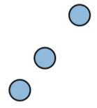
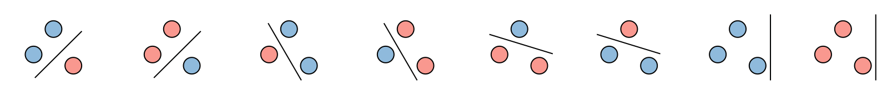

成长函数
为解决上述问题，我们不再直接使用可能无限的来衡量复杂度。取而代之，我们将用一个“有效数量 (effective number)”来替换。这个有效数量即使在无限时，也是有限的。
这就是所谓的成长函数 (growth function) ，其核心思想是：不要去数总共有多少个模型，而是去数这些模型在一个有限的数据集上能产生多少种不同的分类结果。例如，虽然有无数条直线，但它们在3个数据点上能产生的划分方式是有限的。成长函数体现了组合特性 (combinatorial nature)，它捕捉了假设空间中不同假设之间有效差异性。
二分法 (Dichotomy)
“二分法”这个词听起来可能有些抽象，但它的概念非常直观，就是指一种对数据点的划分方式。
单个模型的二分法
假设我们有一个有限的样本集 。
- 当我们从假设空间中取出一个特定的模型（函数），并将它应用到这个点上，我们会得到一个由和组成的元组（一个长度为的序列），即。
- 这个元组就被称为一个二分法 (dichotomy)。因为它实际上是将这个数据点一分为二：一组被标记为，另一组被标记为。
以下图为例，有3个数据点，从假设空间中取出一个特定的模型，将它应用到这3个点上，得到一个由和组成的3元组，再取出一个特定的模型，应用后得到一个二分法，同理，取出也得到了一个二分法。
当然，两个不同的模型可能会产生完全相同的二分法。例如，在二维平面上，两条非常接近的直线可能会以完全相同的方式划分3个点。
整个假设空间的二分法
给定一个样本集，由整个假设空间（中的所有函数）在这些点上能产生的所有不同的二分法的集合，记为。
- 理解：你可以把 看作是整个假设空间在这个特定数据点上的“行为表现”。我们不再关心模型本身，只关心它能在数据上实现多少种不同的划分。
- 复杂度的体现：这个集合的大小越大，说明我们的假设空间在这组数据上能实现的划分方式越多，即越“多样”或越“丰富”。
举一个例子，我们有五个数据点。取出假设空间的所有函数进行处理，一共得到了四种不同的划分方式（用蓝色和米黄色表示+1和-1两种标签）。
这意味着，对于这五个特定的点，我们的假设空间能够产生4种不同的二分法。因此，对于这组数据，。
成长函数 (Growth Function)
定义与性质
成长函数是一个数值 (number)，它基于二分法的数量来定义。它用来替代模型总数的那个“有效数量”。它的思想不是计算的大小，而是“利用，我们最多能有多少种方式来标记一个包含个点的数据集？”。
成长函数：对于任意个数据点，假设空间最多能产生多少种不同的二分法 (dichotomies)。
假设集的成长函数定义为：
这里的表示集合中元素的数量。
- 是指在一组特定的个点上，能产生的二分法数量。
- 的意思是，我们要遍历所有可能的、由个点组成的数据集，从中找出那个能让最大的值。
成长函数衡量的是假设空间在个点上所能表现出的最大丰富度或最大表达能力，即是衡量假设空间丰富度 (richness) 的一个指标。它是在个数据点上进行评估的，而不是整个输入空间。因此，即使是无限的，也常常是有限的，这正是我们解决之前问题的关键。
成长函数的性质
对于任意个点，总共只有种可能的标记方式（每个点可以是或）。因此，能产生的二分法数量必然小于等于这个总数。所以我们有一个简单的上界：
如果对于某一组特定的个数据点，假设空间强大到能够实现所有种可能的二分法，那么我们就说打散 (shatter) 了这个数据点。
这意味着，无论我们给这个点预先指定什么样的标签组合，我们总能在中找到一个模型能够完美地实现这种标签组合。在这个点上，的表达能力是完全的、不受限制的。
例如，对于3个数据点，一共有8种可能的标记方式。当强大到能实现这8种二分法，我们就说打散 (shatter) 了这3个数据点。

以二维线性分类器为例
- 输入空间：二维平面。
- 假设空间：所有二维平面上的线性分类器 (感知机) 。每一个假设对应一条直线，它将 平面一侧的点标记为 (蓝色)，另一侧标记为 (米黄色)。
我们的目标是计算这个假设空间在时的成长函数值，即。根据定义：
为了求这个值，我们需要考虑不同的的数据集（即三点的不同摆放方式，因为其定义是对于“任意”个数据点），分别计算它们能产生的二分法数量,然后找出最大值。
- 情况一：三个点排列在一条直线上假设三个数据点, , 恰好在同一条直线上。那么线性分类器无法产生或这样的组合，其余6种情况可以产生。那么，对于这组共线的三个点，。
 - 情况二：三个点排列成一个三角形现在，换一种方式考虑这三个点，让它们不共线。这时线性分类器能产生所有可能的标记组合，一共种。它打散 (shatter) 了这3个数据点。所以，此时，。

现在我们回到成长函数的定义，对于一个线性分类器，作用于任意3个数据点：
由于3个点，最多有种标记组合，因此，这里直接。这可以说明，在划分3个点的问题上，线性分类器的表达能力是“完全的”。但这种“完全”的能力会很快达到一个极限。
如果是任意4个数据点呢，线性分类器能实现种标记组合吗，这需要我们去计算。这个问题深究下去就引出了机器学习理论中一个极其重要的概念——VC维 (VC Dimension)。
VC维度
VC维度 (VC Dimension) 是我们一直在寻找的，那个能够替代模型总数的、更智能的复杂度度量。它完全基于“打散”这个概念。
VC维度的定义
定义：一个假设空间的VC维度，记为或，是能被打散的最多点的数量。
理解：
- VC维衡量的是一个假设空间的表达能力 (representation power)。它是一个单一的数值，刻画了模型的复杂度。
- 我们可以将VC维看作是模型的“有效自由度”或”有效参数数量"。
- 就是一个“临界点”。在这个点之前，足够强大，总能找到一组点并实现所有可能的划分；过了这个点之后，的能力就达到了极限，再也无法打散任何更多的点了。
- 例如，如果一个模型的，意味着它最多能打散3个点，我们绝对找不到任何一种4个点的组合能被它打散。
- 如果一个假设空间对任意大的都能满足，那么它的VC维就是无限的。
用VC维约束成长函数
这是整个VC理论的巨大突破。成长函数 这个我们关心的“有效模型数量”，可以被一个以VC维为参数的多项式函数所约束。
数学公式 (Sauer's Lemma) ：
意义：我们之前知道，成长函数指的是对于任意个数据点，最多能产生的不同二分法的数量，它最多以指数级 () 增长。
而这个结论告诉我们，只要一个假设空间的VC维是有限的，那么它的成长函数实际上只能以多项式级增长。增长速度从指数级下降到多项式级。
这是我们能够为那些拥有无限个模型的假设空间 (如线性分类器) 建立有效泛化理论的数学基础。我们找到了那个可以替代 的、更智能且通常为有限的度量。
以二维线性分类器为例
根据前面的例子，对于3个点，线性分类器的成长函数，说明它的表达能力是“完全的”。但这种“完全”的能力会很快达到一个极限。
现在考虑对于任意4个数据点，。是否等于？换句话说，二维线性分类器能否打散(shatter) 4个点？
考虑以下两种最典型的4点布局：
情况1：四个点形成一个凸四边形（例如一个正方形）
你会发现，永远画不出一条直线来完成下图这个划分。一条直线最多只能穿过这个四边形的边界两次，它无法像切蛋糕一样把四个角交替分开。
情况2：一个点在另外三个点组成的三角形内部
我们尝试实现一种标记：将内部的点标记为 -1，而外部的三个点都标记为 +1。同样，永远画不出一条直线来完成这个任务。任何试图将内部点分离出来的直线，都不可避免地会穿过三角形的边界，从而将至少一个外部的点也划分到-1的区域。
因为我们至少能找到一种（实际上是两种）无法实现的标记组合，所以对于任意4个点，线性分类器都无法产生全部种二分法。事实上，可以证明，对于4个点，最多能产生的二分法数量是14。
所以，。
- 这个“临界点”——也就是模型能打散的最大数据点数量——就是VC维。一个假设空间的VC维，记为，是它能打散的最大数据点数量。
- 对于二维线性分类器，我们看到：它可以打散3个点。它不能打散任意4个点。因此，二维线性分类器的 VC维。
- 一旦数据点的数量超过了模型的VC维，成长函数的增长速度就会从指数级 ()急剧放缓，变为多项式级。
既然我们已经知道二维线性分类器的，那么对于任何的情况，我们都可以确定必然远小于。
回顾前面给出的理论Sauer's Lemma，它给出了成长函数的一个上界：
这个不等式其实是Sauer's Lemma 的一个更宽松（less tight）的简化版本，是为了简化计算和分析。Sauer's Lemma 的精确形式是：
其中是组合数，表示从个元素中取个的组合方式。
现在我们就可以直接计算出一个二维线性分类器，对于任意5个数据点的情况：
所以，对于5个点，在种可能的划分中，一条直线最多只能实现其中的26种。
对于任意10个数据点：
这个差距是巨大的！在种可能的标记组合中，一个简单的二维线性分类器最多只能实现其中的176种。这说明它的“表达能力”是相当有限的。
由于这个形式虽然更精确，但在数学上处理起来比较复杂。因此我们使用这个简单的多项式形式来简化计算和分析。
线性分类器的VC维度
根据前面的例子，我们知道二维线性分类器的VC维，现在推广到维线性分类器的VC维。这类分类器在二维空间中就是一条直线，在三维空间中就是一个平面，在高维空间中则是一个超平面。
定理 (Theorem)：一个维（二元）线性分类器的VC维度是：
- ：代表输入数据的维度，或者说特征的数量。例如，如果我们根据“年龄”和“薪水”这两个特征来预测信用风险，那么。
- ：最终的VC维度就是特征数加一。
- 以二维线性分类器为例，，因此，其。这个意思是，在二维空间（）中，一条直线最多可以打散3个点，但任何4个点都无法被打散。
VC维的本质
- VC维=参数数量
- 一个维的二元线性分类器（例如感知机），其模型可以写成。
- 这个模型总共有多少个可以自由调整的参数呢？有个对应于每个特征的权重( 以及 1个偏置项(或截距项)。因此，总参数数量是。
- 惊人地，我们发现对于线性分类器，的值不多不少，正好等于模型的参数数量。
- VC维的本质：有效参数数量
- 这个例子启发我们，VC维度衡量的是一个假设空间的有效参数数量 (effective number of parameters)，并以此来体现其复杂度。
- 一个模型拥有的参数越多，通常它的假设空间就越复杂，其VC维度也就会越大。越大，意味着模型能打散越多的点，表达能力越强，但也更容易过拟合。
- 推广到其他模型
- 对于线性分类器来说，VC维恰好等于参数个数，这是一个非常美好的特例。
- 对于很多其他模型（如神经网络、支持向量机、决策树等），“有效参数”可能不那么明显。例如，一个拥有1000个参数的神经网络，其VC维可能远小于1000。
- VC维度的真正威力在于，它提供了一个比单纯“数参数个数”更深刻、更准确的衡量模型复杂度的标准。无论模型内部结构多么复杂，VC维都能给出一个单一的数值来刻画其泛化能力，并将它代入我们之前推导的泛化公式中，取代那个有问题的。
VC维度泛化结果
现在，将前面所有的铺垫（成长函数、VC维）汇集在一起，给出了最终的、也是机器学习理论中最重要的成果之一——VC泛化界 (VC Generalization Bound)
第一步（基于成长函数）：首先，通过更复杂的数学证明，可以得到一个基于成长函数的泛化界。对于任意，我们有至少的概率，保证对所有
第二步（基于VC维）：接下来，我们用前面得到的关键结论（即成长函数 可以被VC维约束）代入上面的公式。这样，我们就得到了最终的、只与VC维相关的泛化界。我们有至少的概率，保证对所有：
这个公式是整个理论的巅峰。它告诉我们，一个模型（即使是从无限多个模型中选出的）的真实误差 () ，有很大概率被它的训练误差 (加上一个由模型复杂度 () 和数据量 () 共同决定的惩罚项所约束。
VC泛化界的核心形式可以被简化为：
- 这里的符号隐藏了一些常数和对数项（如），目的是为了突出影响泛化误差最主要的两个因素：模型的复杂度和样本数量。
- 我们成功地用一个更合理的“有效模型数量”（最终体现为）替代了原来粗糙的模型总数。
- 当样本数量越来越大，泛化误差项就会趋向于0，此时将很好地逼近。这与我们基于大数定律的直觉是完全一致的。
VC泛化界的用途
理论推导非常漂亮，但它在实际中到底有没有用？
- 一个现实：VC界是宽松的 (the bound is loose)
- VC分析是一个普适性 (universal) 的结果，因为它适用于所有的假设空间、学习算法、数据分布和目标函数。
- 正是因为要考虑到所有最坏的情况，导致它在任何一个具体问题上计算出的数值边界通常都非常宽松，远大于实际观测到的泛化误差。
- 尽管宽松，但它提供了极其有用的指导
- 为无限模型空间的可行性奠定理论基础：这是VC理论最大的贡献。它从数学上严格证明了，对于拥有无限个模型的假设空间（如线性分类器），只要其VC维是有限的，当有足够多的训练样本时，学习就是可行的。
- 提供模型选择和比较的依据：VC界对于不同模型来说，往往是“同等程度地宽松”。这意味着，虽然我们不能相信它给出的绝对误差值，但我们可以利用它来比较不同模型的优劣。在实际应用中，VC维更小的模型，通常比更大的模型有更好的泛化能力。这为我们选择更简单还是更复杂的模型提供了理论指导。
- 给出经验法则 (rules of thumb)：VC理论为需要多少训练数据提供了一个大致的参考。例如，一个广为流传的经验法则是，训练样本数量应该是VC维的10倍左右，即。这为我们估算项目所需的数据量提供了依据。
VC泛化理论虽然在数值上不够紧凑，但它从根本上回答了“为什么机器学习是可行的”，并为“如何进行模型选择”和“需要多少数据”等关键工程问题提供了深刻的理论洞察和实用的指导原则。
样本复杂度 (Sample Complexity)
样本复杂度指的是，为了达到某种指定的泛化性能，我们需要多少个训练样本？
这里的“泛化性能”由两个参数来确定：
- 置信度：我们希望我们的结论有很高的概率是正确的。是我们能容忍的“犯错”概率。
- 泛化误差：我们希望样本外误差和样本内误差之间的差距小于一个我们能接受的小数。
公式推导：
我们的出发点是前面推导的VC泛化界的核心部分，即泛化误差项：
我们希望这个泛化误差小于等于我们能接受的小数（设定的目标）：
现在，我们只需要对这个不等式进行代数变换，解出样本数量，得到样本复杂度的计算公式。这个公式的精确形式比较复杂，因为它自己也依赖于。但我们可以用大符号来抓住其核心：
这告诉我们，所需的样本量与模型的复杂度大致成正比。与我们要求的精度的平方成反比。这意味着，如果我们想让误差容忍度减半，所需的数据量大约要翻四倍。
估算样本复杂度的例子
假设我们有一个学习模型，其VC维。我们希望泛化误差最多不超过。问题是：我们需要多大的数据集？
将上述数值代入样本复杂度的公式：
解这个关于的不等式，得到的结果大约是n ≈ 22000。这意味着：
- VC界是宽松的：计算出的样本量（22000）远大于我们之前提到的经验法则（，即30）。这再次从数值上证明了，VC理论给出的界限为了保证普适性，在具体问题上通常是非常宽松的。
- 指导意义仍存在：尽管数值很宽松，但这个过程揭示了正确的趋势。如果我们选择一个更复杂的模型，比如增加到5，那么公式计算出的所需样本量将会更大。这与我们的实践经验完全吻合：模型越复杂（越大），就需要越多的样本来进行充分的训练和泛化。
估算样本外误差的例子
我们之前问的是“为了达到某个误差，需要多少数据？”；现在我们问的是“在现有数据下，我们能保证多大的误差？”
这是因为在实践中，我们通常是先拿到一个大小固定的数据集，这意味着样本量是已知的。我们的问题是，利用这个数据，我们能期待获得什么样的性能保证。
假设我们有 n=10,000个训练样本。我们希望结论有 90%的置信度，这意味着“犯错”的概率。我们使用的模型，其VC维已知为。
问题：在90%的置信度下，我们能保证的样本外误差是多少？换句话说，最多会比大多少？
将我们已知的数值，，代入公式的根号部分：
最终我们得到的结论是：。这句话的实际意义是：我们可以有90%的把握保证，我们训练出的模型的真实误差，不会超过它在训练集上的误差再加上一个16%的余量。
举个例子，如果我们用这个模型在10000个样本上训练后，得到训练误差为5%，那么我们可以满怀信心地说，这个模型在未来未知数据上的真实误差，有90%的可能性不会超过 5% + 16% = 21%。这个界限为我们评估模型的真实性能提供了一个具体的、概率上的保证。
总结：根本性权衡
回顾VC泛化界的简化形式：
以一种更清晰的方式表示：
我们的目标始终如一：让样本外误差变小。为了实现这个目标，我们需要让公式右侧的两个部分——训练误差和泛化误差项——都尽可能小。
相互矛盾的需求：
- 在训练方面 (On the training side) ：为了让变小，我们需要一个更复杂的假设空间（即更 大的）。因为一个更强大的模型才有能力更好地拟合训练数据。
- 在泛化方面 (On the generalization side) ：为了让泛化误差项变小，我们需要一 个更简单的假设空间（即更小的）。因为一个更简单的模型过拟合的风险更小，其训练表现 和真实表现的差距也更小。
寻找一个复杂度“恰到好处”的模型。模型不能过于简单，以至于无法学习数据中的规律（欠拟合）；也不能过于复杂，以至于把数据中的噪声也学了进去（过拟合）。
下图将模型复杂度、训练误差和泛化误差之间的关系可视化。
- X轴，即代表模型的复杂度。越往右走，模型的VC维越大，模型也越复杂、越强大。
- Y轴：代表误差的大小。
曲线（虚线）：代表训练误差。随着模型复杂度 () 的增加，模型拟合训练数据的能力越来越强，因此训练误差会持续下降。
model complexity 曲线（灰色实线）：代表泛化误差项（即）。随着模型复杂度 () 的增加，这个惩罚项会持续上升。
曲线（黑色实线）：代表我们最终关心的真实误差。它是训练误差 和泛化误差项的和。因此，这条曲线呈现出一个标志性的 U形:
- 在左侧，模型太简单（很小），导致很高（欠拟合），即使泛化能力强，也很高。
- 在右侧，模型太复杂（很大），导致泛化误差项很高（过拟合），即使很低，也很高。
- U形曲线的最低点对应的模型，就是我们的最佳选择。这个点的复杂度为 ，它在训练误差和泛化误差之间取得了最好的平衡，最小化了最终的真实误差。
奥卡姆剃刀原则 (Occam's Razor principle)
这个学习曲线完美诠释了“最简单的可用模型就是最好的模型”这一原则。在众多能够较好地解释数据的模型中（即较低的模型），我们应该选择那个最简单的（最小的）。任何比更复杂的模型，即便能让更低，也会因为泛化能力变差而导致最终的上升。
伪维度 (pseudo-dimension)
到目前为止，我们建立的VC理论都是针对二元分类问题，即标签的取值为。
为了将VC分析应用到线性回归模型（标签是连续的实数）上，我们需要引入一个更广义的概念，叫做伪维度 (pseudo-dimension)。
线性回归的伪维度：与二元分类的情况非常相似，一个维的线性回归模型，其伪维度也等于。
最终，线性回归的VC泛化界具有和二元分类完全相同的形式：
唯一的区别是，这里的复杂度度量指的是伪维度。
这说明，我们在分类问题上学到的关于模型选择、样本复杂度以及根本性权衡的所有理论和直觉，也同样适用于回归问题。
💬 评论区